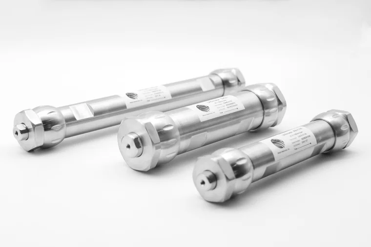
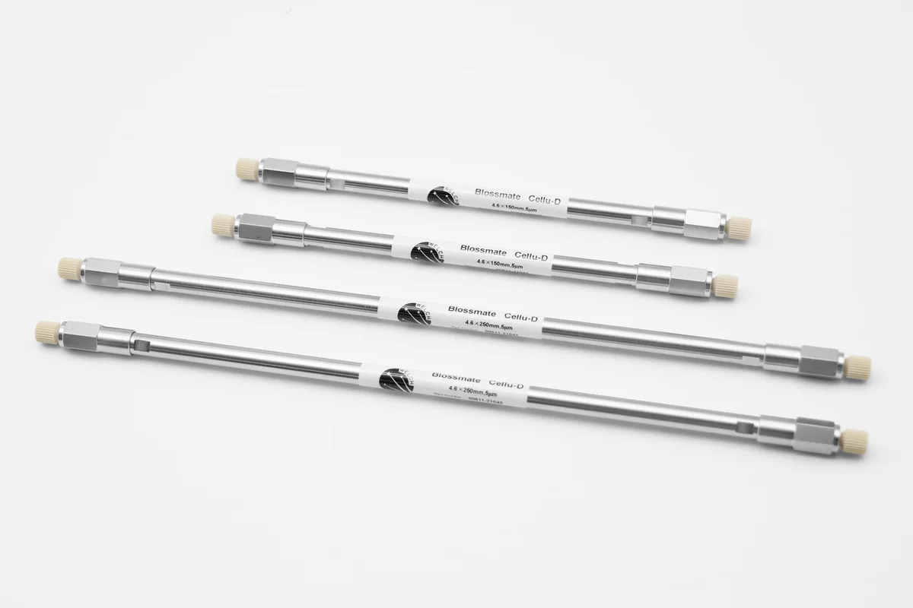
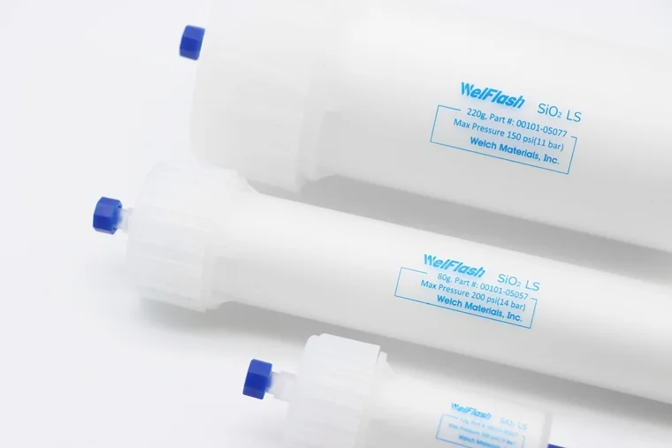
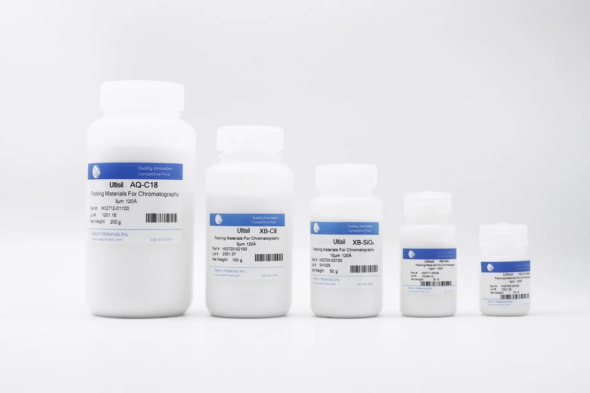
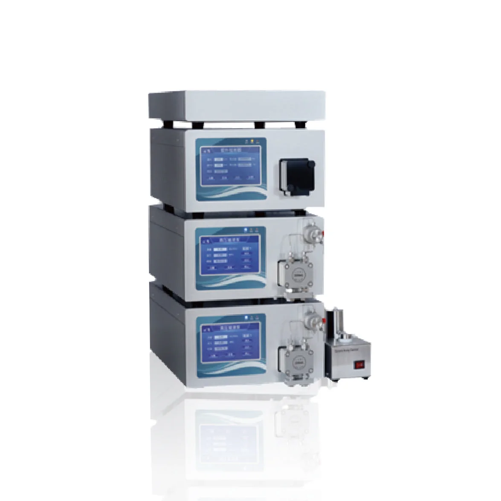
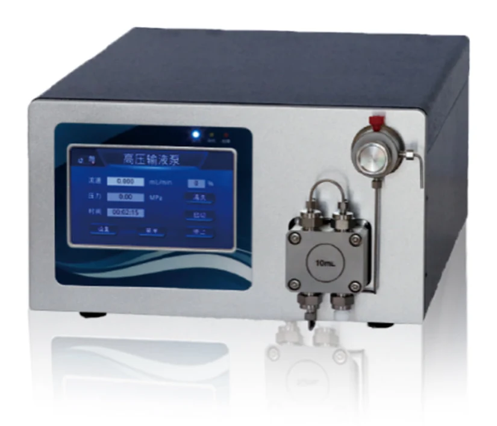
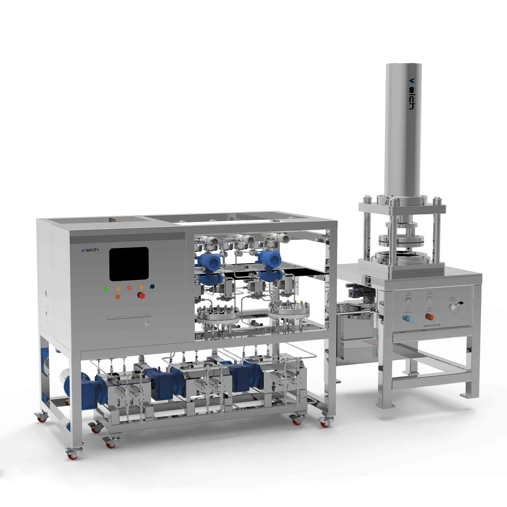
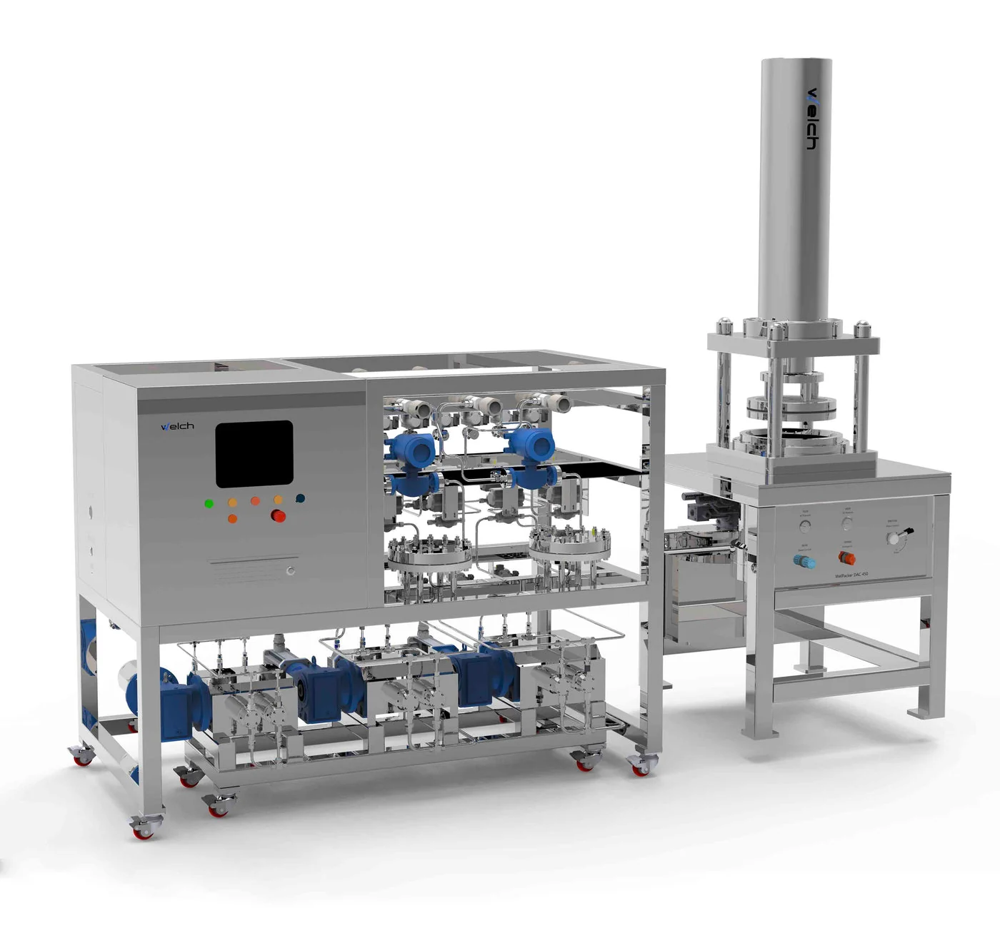
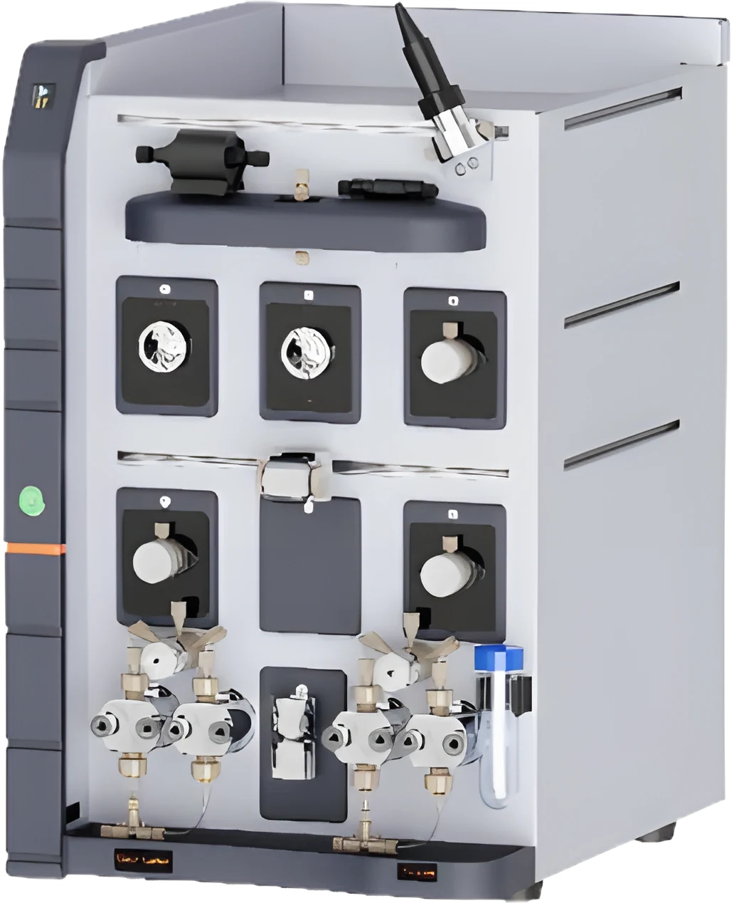
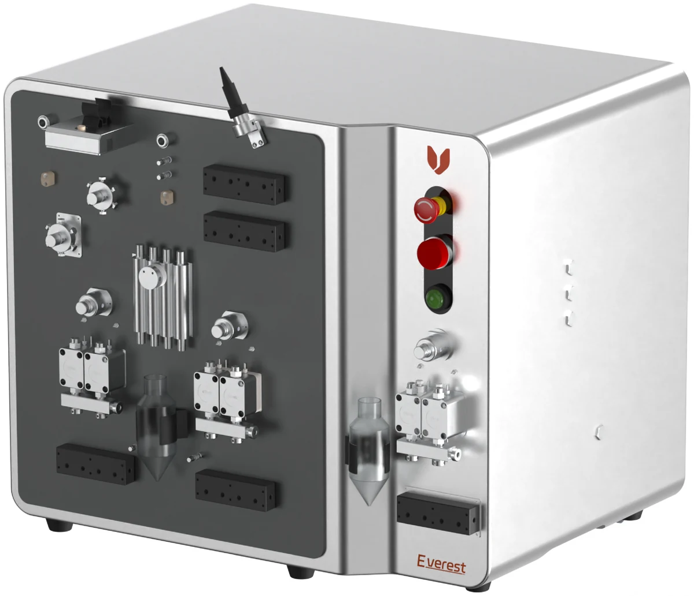

PrepPack Ultisil® prep columnsC18, C8, C4, C1, phenyl, CN, NH2, diol, SAX, SCX, AQ-C18; 5, 10, 20 and 40–70 µm.Category 02 · 11 product lines
Preparative, flash & DAC
From laboratory discovery to production-scale purification — prep and flash columns, packing materials, Sail 1000 lab systems, WelPacker DAC and explosion-proof skids. 100+ Welch purification installations in India.
Showing 11 of 11 product lines

Blossmate® chiral prep columnsCellu-D, Cellu-J, Amy-D, IMMA and IMMB; 10, 21.2, 30 and 50 mm ID.
WelFlash® flash cartridgesSilica, C18, phenyl, CN, NH2, diol, HILIC, SAX, SCX; 4 g to 1600 g and custom.
Chromatography packing materialsBonded and chiral silica, 5–70 µm, from kilograms to ton scale.
Sail 1000 modular prep LC systemPumps from 10 mL/min to 3 L/min, dual-wavelength UV-Vis and CDS with audit trails.
Sail 1000 collectors & accessories8-channel and 120-position fraction collectors, autosampler, column rack, online filters.
WelPacker DAC columnsDAC50 to DAC2000 self-packing dynamic axial compression columns, 316L SS.
WelPacker purification skids LC5–LC805–80 L/min, 100 bar, explosion-proof Ex d II B T4, PLC + HMI control.
Preparative HPLC system (lab)Lab-scale prep HPLC for peptides, oligos and small molecules.
Pilot-scale preparative LC systemPilot-scale prep liquid chromatography for scale-up batches.No products match these filters.